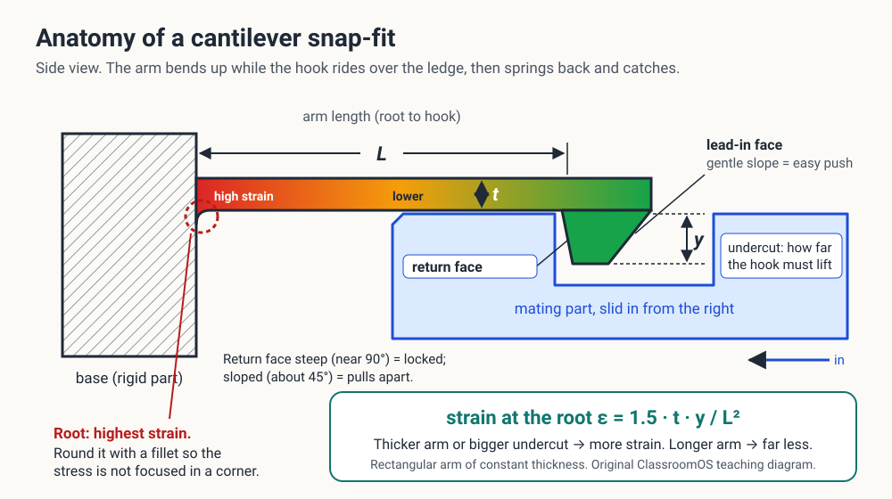
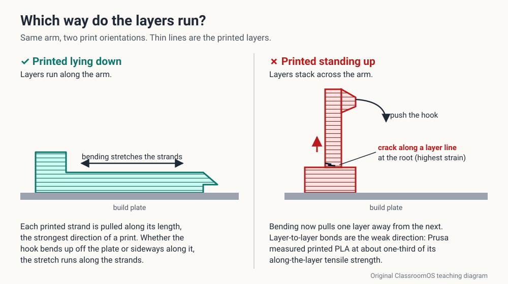
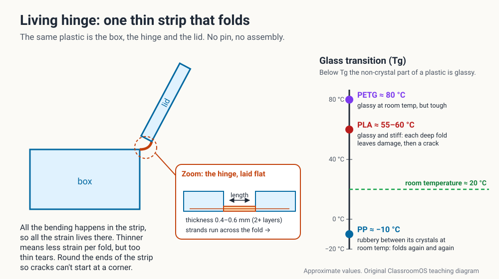
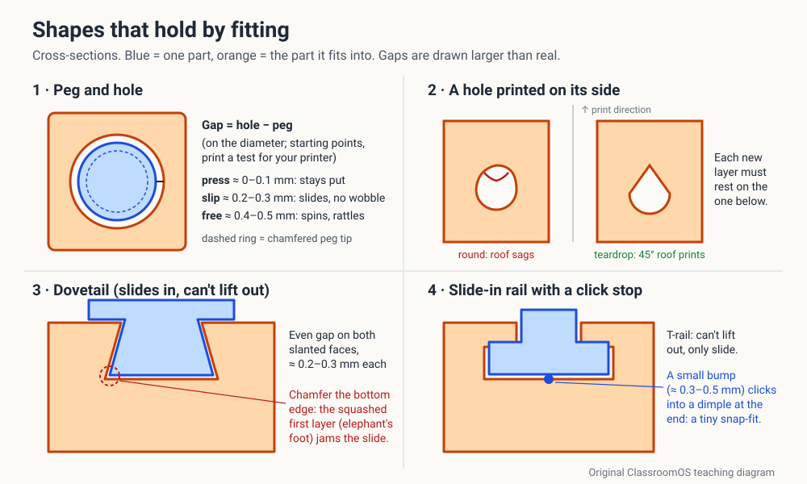
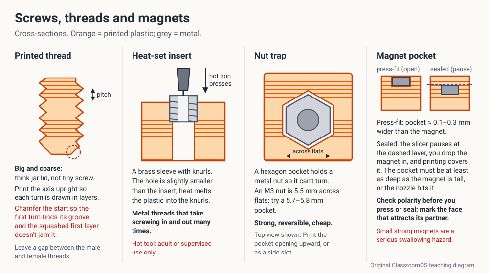

Snap-fits & the strain checkLiving hingesPegs & dovetailsThreads, inserts, nut trapsMagnet pockets20-cycle test
Look at a TV remote's battery door. It is a separate part, and it clicks shut with a little plastic hook that bends, slides over an edge and springs back. Nobody glued it. Somebody designed how far that hook may bend before it cracks. In this lesson you design joints the same way: pick the right kind, check the numbers, print it, and then open and close it twenty times to find out whether you were right.
Why make two parts at all?
A printer can make almost any shape in one piece, so why split a design? Hold up a pencil box, a hinged phone stand or a toy with a battery door and count the reasons:
1It must openA lid, a battery door, a box you refill. Some part has to come apart and go back together, again and again.
2It must moveA hinge swings, a drawer slides, a wheel turns. The joint is the motion.
3Each part prints best its own wayA hook printed lying down is far stronger than the same hook standing up. Split the object so every piece can lie in its strong direction.
4It is too bigBigger than the printer's bed, or so tall it would wobble. Print it in pieces and join them.
Trio Challenge link: the Trio Challenge asks for a print that moves in one piece, one that is a useful tool, and one that is a likeness. A print-in-place hinge or slider is a joint designed with a loose-fit gap; a useful tool usually opens, clips onto something, or holds a magnet; even a likeness is easier to print as a head and a body joined with a peg. Every Trio piece has a joint in it somewhere.
1 · The joint family
Every joint answers four questions: Does it move? How often does it come apart? How much load does it carry? Can it print as one piece? Here is the family, from all-plastic to plastic-plus-metal.
Joints you can design for a filament printer
Joint
How it holds
Comes apart?
Good for
Watch out for
Snap-fit
A bending arm with a hook springs back behind an edge
Never, or many times, depending on the return face
Lids, battery doors, clips
Bending too far cracks the arm at its root
Living hinge
One thin strip of plastic folds
Stays joined (it is one part)
Flip-top boxes, folding clips
PLA cracks after a few folds; PP and PETG last
Pin hinge
Knuckles turn around a pin
The pin can be pushed out
Doors, lids, print-in-place toys
Needs a loose-fit gap or it fuses
Peg and hole
A designed fit: press, slip or loose
Press: hardly; slip: yes
Lining up parts, heads on bodies
Holes print small; test the gap first
Dovetail or rail
An angled tongue slides in one direction only
Slides out the way it came in
Drawers, sliding lids, stackable parts
The squashed first layer jams it
Printed thread
A spiral ridge, like a jar lid
Twist off, many times
Jars, caps, big knobs
Small threads print badly; go big and coarse
Heat-set insert
Brass threads melted into the plastic
Screw in and out many times
Cases, mounts, anything that takes a load
Needs a hot iron: an adult's job
Nut trap
A hexagon pocket holds a metal nut for a bolt
Unbolt it
Strong joints with no special tools
The pocket must stop the nut turning
Magnet pocket
Magnets pressed or sealed into both parts
Pulls apart with no wear
Lids, game pieces, modular parts
Polarity, and small magnets are a swallowing hazard
Every pocket, window and hole in that table is the same CAD move: a shape subtracted from the part. Where that lives in the app you use:
2 · Snap-fits: the bend you can calculate
A snap-fit is a small springy arm, a cantilever, fixed at one end and free at the other, with a hook on its tip. Push the parts together: the hook's sloped face rides up the edge and bends the arm. Once past the edge, the arm springs back and the hook catches. The whole design question is: how far can this arm bend before it cracks?

Three numbers decide whether it breaks: L, t and y. The arm has to lift by the undercut y to clear the edge. All the stretching piles up at the root, so that is where snap-fits crack, and why the root gets a rounded fillet. Original ClassroomOS teaching diagram.
Strain: stretch per length
When the arm bends, its top surface stretches and its bottom surface squashes. Engineers measure that with strain, written ε (the Greek letter epsilon): how much longer a bit of material gets, divided by how long it was. Stretch a 100 mm rubber band to 101 mm and the strain is 1 ÷ 100 = 0.01, or 1%. Plastics don't care how hard you push; they care how far they are stretched. Every plastic has a strain it can survive, and past it, it whitens, stays bent, or cracks.
ε = 1.5 × t × y ÷ L²
ε = strain at the root (× 100 for %)t = arm thickness (mm)y = undercut (mm)L = arm length (mm)
This is the standard formula for an arm of the same thickness all the way along (from Bayer's, now Covestro's, snap-fit design guide). Read what it says: L is squared, so a longer arm is the most powerful fix. Make the arm twice as long and the strain drops to a quarter. Make it twice as thick, or the hook twice as deep, and the strain doubles. The width b doesn't appear at all: a wider arm needs more force to bend, but stretches just as much.
Worked example. A PLA lid clip: L = 15 mm, t = 1.5 mm, y = 1.0 mm. ε = 1.5 × 1.5 × 1.0 ÷ 15² = 2.25 ÷ 225 = 0.010 = 1.0%. PLA printed lying down is good for about 2.0%, so this clip uses half its limit. Print it standing up and the limit drops to about 0.7%: the same clip would crack.

Print snap-fit arms lying down. Then bending stretches the printed strands along their length, a print's strongest direction. Stand the arm up and the same bend peels one layer off the next. Original ClassroomOS teaching diagram.
Snap-Fit Lab
Set the arm's size, the plastic and how it is printed. The arm is coloured by strain (green is relaxed, red is at the limit). Press play to push the parts together and pull them apart, and watch the verdict. Try the presets first: each one teaches something.
Presets:
The return face decides whether it ever comes apart. With a 90° return face, pulling just jams the hook against the edge: to open it you press the arm by hand. Slope the return face and pulling slides the hook back up, like the lead-in in reverse. With plastic rubbing on plastic (friction about 0.3, the lab's assumption), a face steeper than about 73° can't slide at all, and design guides treat anything from about 60° to 90° as "effectively permanent". About 45° gives a clip you can pull apart and snap back.
Where the safe-strain numbers come from
A snap-fit design guide for moulded plastic lists safe strains measured on solid, moulded test bars. A printed part is not solid: it is strands laid side by side and layers stacked on layers, so we can't borrow those numbers. The lab's limits come from tests of printed bars, and each is rounded down on purpose:
Safe strain for one snap (the lab's limits)
Plastic
Printed lying down
Printed standing up
Where the number comes from
PLA
2.0%
0.7%
Printed bars yield at about 2.9% strain; the lab allows 70% of that. Across layers, Prusa measured layer adhesion at 17 MPa, about a third of the along-the-layer strength (51 MPa); 17 MPa ÷ 2,300 MPa stiffness ≈ 0.7%.
PETG
3.6%
1.2%
Printed bars yield at about 5.1% strain (70% of that is 3.6%). Layer adhesion 18 MPa ÷ 1,500 MPa stiffness = 1.2%.
PP
8%
8%
Printed PP bends a long way (Ultimaker's printed bars yield at about 19–35%), but the simple formula is only accurate for small bends, so the lab stops at 8%.
Opened often? The same guide says joints that are taken apart and put back together often should use only about 60% of the one-snap strain, because every bend adds a little damage. The lab applies that when you choose "Opened and closed often". And it wants you under 80% of the limit for a PASS, because your printer, your filament and a sharp root corner can all make the real arm weaker than the test bars. These are classroom starting numbers, not guarantees: the 20-cycle test is how you find out.
3 · Living hinges: one strip that folds
A living hinge is a thin strip of the same plastic joining two thicker parts. Flip-top lids on shampoo and ketchup bottles use them, moulded in polypropylene, and they fold thousands of times. Printed ones can work too, if you choose the plastic and the layer direction with care.

Why PP folds and PLA cracks. At room temperature PLA and PETG are below their glass transition temperature, so they are glassy; PP is above its, so it stays rubbery between its crystals and can fold again and again. Original ClassroomOS teaching diagram.
Thin, but not too thinTwo or three printed layers (about 0.4–0.6 mm). Thinner means less strain per fold; too thin tears.
Strands across the foldPrint the hinge flat on the bed so its strands run across the fold line, not along it. A crack along a strand line is a crack along the whole hinge.
Round the endsFillet where the strip meets the thick parts, so the bend spreads out instead of starting a crack in a sharp corner.
Choose the plasticPP is the real living-hinge plastic; PETG lasts a while; PLA can crack after only a few folds. For PLA, use a pin hinge instead.
A print-in-place pin hinge is the other one-piece option: knuckles printed around a pin with a loose-fit gap of about 0.35–0.50 mm per side, so nothing fuses. You design and tune it in Design a Moving Fit.
4 · Pegs, dovetails and rails: joints that hold by fitting
A peg in a hole holds by its fit. Use the same three fits, and the same gaps per side, as Measure and Fit: press 0.05–0.15 mm, slip 0.20–0.30 mm, loose 0.35–0.50 mm. They are starting points for PLA on a 0.4 mm nozzle; your own fit test coupon gives the real numbers for your printer.

Fit, then print direction. The gap is designed on each side. A hole printed lying on its side needs a pointed teardrop roof, because every layer must sit on the one below. A dovetail can only slide one way, and a small bump that clicks into a dimple keeps it shut: a tiny snap-fit. Original ClassroomOS teaching diagram.
Chamfer the tips and the bottom edges. A 0.5 mm chamfer at the tip of a peg guides it in. At the bed, the squashed first layer (elephant's foot) bulges outward and jams slides and holes, so chamfer the bottom edges of anything that must fit.
Pegs in shear are strong; pegs pulled straight up are weak. A peg resists sideways loads well. If the parts get pulled apart along the peg, add a snap-fit, a screw or a magnet.
Dovetails: give both slanted faces the same slip gap, and leave a little more at the end of the slot so trapped air and stray plastic don't stop the slide.
5 · Threads, inserts, nut traps and magnets
When a joint has to carry a real load, or be undone dozens of times, bring in metal. Plastic threads wear; brass threads and steel bolts don't.

Plastic holds the metal; the metal takes the wear. Printed threads work when they are big and coarse. A heat-set insert gives brass threads; a nut trap holds a nut so it can't turn; a magnet pocket can be pressed in or sealed in mid-print. Original ClassroomOS teaching diagram.
Printed threads, inserts and nut traps compared
Printed thread
Screw straight into plastic
Heat-set insert
Nut trap + bolt
Extra parts
None
A screw
Brass insert + screw
Nut + bolt
Strength
Low to medium
Medium, strips if overtightened
High
High
Undo many times?
Yes, if coarse
A few times, then it strips
Yes
Yes
Best size
Big: jar lids, caps, knobs
Small screws in a pilot hole
Small: M2–M5 screws
Small: M3–M8 bolts
Tools
None
Screwdriver
Soldering iron (adult)
Screwdriver, wrench
Printed threads: print the thread's axis upright so each turn is drawn in layers, make it coarse (a few millimetres per turn for a jar), leave a slip gap between the two threads, and chamfer the first turn.
Nut traps: model the hexagon by its distance across the flats (an M3 nut is 5.5 mm across the flats) plus a press gap, about 5.7–5.8 mm, so the nut can't spin. The bolt hole is a loose clearance hole, about 3.4 mm for M3.
Heat-set inserts: model the hole at the size the insert's maker lists (it is a little smaller than the insert), and leave walls at least as thick as the insert around it. A hot iron presses the insert in; the melted plastic flows into its knurls and grips.
Magnet pockets: a press-fit pocket is the magnet's diameter plus 0.1–0.3 mm. A sealed pocket is made by pausing the print at the layer above the pocket (a "pause at height" in the slicer), dropping the magnet in, and letting the printer cover it. Mark polarity before you press or seal: stack the two magnets that will meet, and mark the touching faces.
Hot iron: an adult's job, or closely supervised. A soldering iron for inserts runs around 200 °C or more. Use a stand, never touch the tip, and let parts cool.
Small strong magnets are dangerous to swallow. Two or more can attract through the walls of the intestines. Keep them away from young children; K–2 classes use big magnets that are already sealed in, or none.
Wear safety glasses for the break and cycle tests. Snapping PLA throws sharp pieces.
Joint chooser
Answer four questions about your own design. The chooser suggests a joint to try first, and a backup. It is a starting point; the 20-cycle test has the last word.
6 · Hands-on task: design, print and test a joint 20 times
Design one joint for a real object (your Trio piece if you have one), predict whether it will survive, print it, and use it twenty times. Twenty cycles finds most early failures: a snap-fit that is going to crack usually does it in the first few, and a peg that wears loose shows it by cycle 20.
Design record
My joint before I print
Object and what the joint does
Joint type (from the chooser) and why
Plastic, print orientation, printer
Key numbers (L, t, y; or the fit gap per side)
Predicted strain and % of limit (snap-fits), or fit chosen
My prediction: will it survive 20 cycles?
Steps
Print a test piece first, just the joint, not the whole object: a snap-fit arm and its window, a hinge between two small tabs, a peg and a hole. It prints in minutes.
Safety glasses on. Check the joint for stringing or elephant's foot and clean it up before cycle 1.
One cycle = put together, shake test, take apart (or open, shake, close for a hinge). The shake test: hold one part and shake firmly for three seconds. Did it stay?
Tick each check that passes and write what you notice: whitening at the root, a click getting softer, a wobble, a crack.
Stop at the first crack, write down the cycle number, and look at where it broke. That is the most useful number you will get.
20-cycle joint test
Cycle
Goes together
Holds (shake)
Comes apart cleanly
What I saw
What happened and what I'll change
Was my prediction right? Why?
Where did it wear or break first?
One number I'll change, and to what
Use Save answers in the lesson's heart | save | print pill to keep the record in your browser, or print the lesson and fill it in by hand. Keep the tested joint: taped to the record sheet, it is evidence for your Trio portfolio.
Pick your level
K–2 · Click, slide, turn
Sort teacher-printed joints: which ones click, slide, turn or twist? Open and close one 20 times and colour a box each time. Find a snap-fit at home (a battery door).
3–5 · Which joint for the job?
Use the joint chooser for a pencil box or a phone stand. In the Snap-Fit Lab, change only L and describe what happens. Run the 20-cycle test on a teacher-designed clip.
6–8 · Calculate, then test
Calculate ε for your own snap-fit by hand and check it in the lab. Design one joint for your Trio piece, fill in the design record, and run the full 20-cycle test.
9–12 · Design to a number
Rearrange the formula to find L for a target strain. Compare a one-snap and a many-snap design, compute the push force, and test two versions: change one variable and report the difference.
Checkpoint
You're ready to move on when you can:
Name a joint for a lid that opens often, one for a heavy load, and one that prints in one piece.
Calculate the root strain of a snap-fit with ε = 1.5·t·y/L², and say which change lowers it most.
Explain why a snap-fit is printed lying down, and why its root gets a fillet.
Explain what the return angle does to a snap-fit.
Size a peg, a nut trap or a magnet pocket with the fits from Measure and Fit.
Run and record a 20-cycle test, and name one change from what you saw.
Challenge10. The force to bend the arm is P = b·t²·E·ε ÷ (6·L). For a PLA clip (E = 2,300 MPa) with b = 6 mm, t = 1.5 mm, L = 15 mm and ε = 0.010, what is P in newtons (to 0.1)?
Hint: 6 × 2.25 × 2300 × 0.010 ÷ 90 = 310.5 ÷ 90. Millimetres and MPa give newtons. Check it with the lab's "PLA lid clip" preset.
Vocabulary
Joint
Where two parts meet and are held together, fixed or moving.
Snap-fit
A joint where a springy arm with a hook bends past an edge and catches behind it.
Cantilever
A beam fixed at one end and free at the other, like a diving board.
Undercut
How far a snap-fit hook sticks out, so how far the arm must bend to clear the edge.
Strain (ε)
How much a material stretches divided by its original length, often given in %.
Return face
The back face of a snap-fit hook. Steep locks; sloped lets it come apart.
Living hinge
A thin, flexible strip of the same plastic that joins two parts and folds.
Dovetail
A flared tongue in a matching slot: it slides one way and can't lift out.
Heat-set insert
A knurled brass sleeve melted into a printed hole to give strong metal threads.
Nut trap
A hexagon pocket that holds a nut so it can't turn while a bolt is tightened.
Polarity
Which face of a magnet is north and which is south; opposite poles attract.
Glass transition temperature
The temperature where a plastic changes from glassy and stiff to rubbery.
Sources
Bayer MaterialScience (now Covestro), Snap-Fit Joints for Plastics: A Design Guide: cantilever formulas for an arm of constant thickness (strain ε = 1.5·t·y/L², deflection force, mating force with friction), about 60% of the one-snap strain for joints separated often, and return angles of roughly 60–90° treated as effectively inseparable.
Ultimaker, Ultimaker PP technical data sheet (printed bars: tensile modulus about 250 MPa, elongation at yield about 19–35% depending on direction).
U.S. Consumer Product Safety Commission, Magnets information center (swallowed high-powered magnets can attract each other through the intestines).
ISO 4032 hexagon nuts: an M3 nut is 5.5 mm across the flats; ISO 273 medium clearance hole for M3 is 3.4 mm.
Fit gaps per side (press, slip, loose): this site's Measure and Fit and Design a Moving Fit. Treat every number on this page as a starting point to test on your own printer.